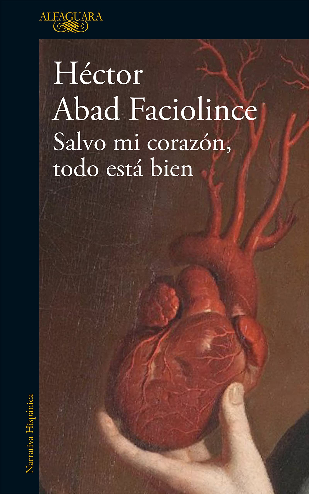

Salvo mi corazón, todo está bien
Reseña por Jorge I. Zuluaga

Ver reseña en GoodReads (necesita cuenta)
No es que estas obras hayan modificado mi convicción sobre la inexistencia de fenómenos sobrenaturales —empezando por la idea de entidades omnipresentes— ni que ahora considere la vida religiosa como una opción deseable. En esto me sigo identificando con la tía Maite (de Los domingos) o con Joaquín el ateo (de la novela de Abad Faciolince). Pero debo confesar que el contacto íntimo con estos personajes me ha hecho reflexionar sobre la rigidez de mis posiciones iniciales.
La novela narra la historia de Luis Córdoba, un sacerdote en Medellín que, a mitad de su vida, descubre una condición cardíaca que exige un trasplante. El corazón es, sin duda, el protagonista técnico y simbólico. Abad Faciolince no recorre la biografía completa de Córdoba, sino que se concentra en sus últimos meses, un periodo donde parece vivir con más intensidad que en sus tres décadas previas de sacerdocio.
Abad Faciolince demuestra nuevamente su maestría para tejer historias íntimas y familiares, ese registro tan personal por el que es reconocido internacionalmente.
La estructura es uno de sus puntos fuertes. No es una narración cronológica lineal; el narrador, el sacerdote Aurelio Lelo Sánchez, salta en el tiempo usando notas desordenadas acumuladas durante años. El libro se presenta como la elaboración de un escritor, Joaquín (claro avatar del propio Abad Faciolince), quien organiza los apuntes de Lelo para darles coherencia. Así, descubrimos los secretos de personajes peculiares mediante testimonios directos o confidencias de segunda mano.
Como científico, disfruté las descripciones detalladas sobre la fisiología cardíaca. Abad Faciolince integra lecciones de anatomía y relatos minuciosos de cirugías a corazón abierto sin romper el ritmo narrativo. Es fascinante entender las dolencias de Córdoba y del propio Joaquín bajo esta luz técnica. Personalmente, no volveré a pensar en mi corazón sin visualizar ventrículos, aurículas, sístoles y, por supuesto, la FE (fracción de eyección); conceptos que ahora quedarán vinculados para siempre a esta lectura.
Lo que más me conmovió fue la relación de Córdoba con Teresa y Darlis. Sin ánimos de hacer spoilers, debo decir que si al terminar no se han enamorado de una o de ambas, como le pasa a algún personaje, deberían hacerse revisar seriamente las aurículas.
Este libro me deja una lección de humildad: la vida clerical es mucho más rica y compleja de lo que dictaba mi sesgo anticlerical. Mi ignorancia sobre las motivaciones del alma humana (entiéndase el término desde mi ateísmo) me tenía equivocado. Conocer a Luis Córdoba, el Gordo, y a Ainara (la protagonista de Los domingos) me ha enseñado a respetar profundamente a quienes eligen este camino religioso.
No soy menos ateo que antes, pero mi anticlericalismo se ha moderado. Vean Los domingos y, por supuesto, lean Salvo mi corazón, todo está bien.
P.D. Hace unos años compré el libro Páginas de cine , del crítico Luis Alberto Álvarez —quien falleció precisamente en una cirugía de corazón abierto en Medellín en 1996—, como regalo para mi esposa Olga Penagos. Tras cerrar esta novela de Abad Faciolince, siento que es hora de volver a las reseñas de aquel gran crítico. ¿Qué relación tiene él con esta historia? Lean el libro y lo descubrirán.